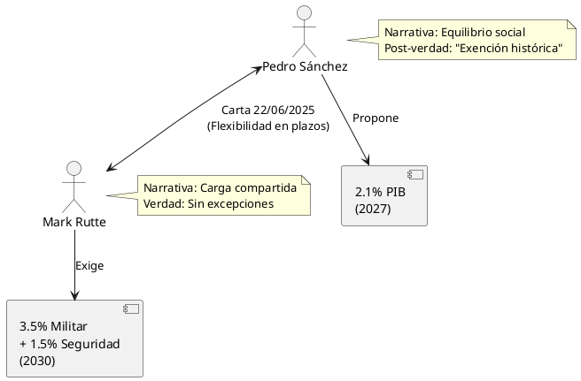

Pulso España-OTAN: Laberinto del Gasto en Defensa 2025
Pulso España-OTAN: Laberinto del Gasto en Defensa 2025
Introducción: La Tensión Estructural
El enfrentamiento dialéctico entre Pedro Sánchez y Mark Rutte sobre el gasto en defensa trasciende una mera disputa presupuestaria. Representa la colisión entre dos visiones incompatibles del Estado moderno: el modelo de bienestar social europeo versus el paradigma de seguridad colectiva transatlántica.
Este análisis profundiza en las complejidades, contradicciones y consecuencias de una negociación que define el futuro de España en la arquitectura de seguridad occidental.
El Cambio de Paradigma Post-Ucrania
La invasión rusa de Ucrania activó la "doctrina del miedo útil" en la OTAN. El compromiso del 2% del PIB se reveló insuficiente ante la nueva realidad geopolítica. España ha incrementado el gasto en defensa en un 70% en la última década, pero resulta insuficiente ante las nuevas exigencias.
Contexto Geopolítico: La Presión de la Nueva Guerra Fría
Las Cifras de la Discordia
Los números revelan la magnitud del desafío:
- España 2024: 1,28% del PIB (≈18.000 millones de euros)
- Compromiso Sánchez: 2,1% para 2027 (≈30.000 millones de euros)
- Exigencia OTAN: 5% para 2035 (≈72.000 millones de euros)
La diferencia representa aproximadamente 42.000 millones de euros anuales adicionales, equivalente a más del 80% del presupuesto actual de sanidad española.
El Factor Trump 2.0
La presión estadounidense, intensificada bajo la administración Trump, ha convertido el gasto en defensa en el termómetro de la lealtad atlántica. España es el único país de la OTAN que rechaza de momento el aumento del gasto en defensa al 5% que pide EEUU.
Las Posiciones: Anatomía de un Desencuentro
Pedro Sánchez: La Resistencia del Estado de Bienestar
Argumentos Explícitos
Sánchez ha enviado una carta al secretario general de la OTAN trasladando que España no puede comprometerse a aumentar el gasto en defensa al 5% del PIB, argumentando que tal compromiso es "incompatible con el Estado de bienestar".
Estrategia Narrativa
- Eficiencia sobre Cantidad: "La clave no es gastar más, es gastar mejor"
- Capacidades Reales: Un gasto del 2,1% será suficiente para cubrir las inversiones requeridas
- Legitimidad Democrática: Priorización del gasto social como mandato electoral
Argumentos Implícitos
- Rechazo a la Militarización: Resistencia a la transformación de España en una economía militarizada
- Soberanía Presupuestaria: Defensa del derecho nacional a determinar prioridades de gasto
- Crítica al Complejo Militar-Industrial: Cuestionamiento implícito de los beneficiarios del aumento
Mark Rutte: El Arquitecto de la Disciplina Atlántica
Posición Oficial
Rutte señala en su carta que "España está convencida de que puede cumplir los nuevos objetivos de capacidad acordados con una trayectoria de gasto inferior al 5% (3,5% en defensa básica, 1,5% en seguridad relacionada) del PIB".
Estrategia de Presión
- Flexibilidad Condicional: Reconocimiento de un enfoque diferenciado manteniendo las metas
- Responsabilidad Colectiva: Énfasis en la carga compartida de la seguridad
- Precedente Peligroso: Preocupación por el efecto dominó en otros aliados
La Contradicción Rutte
Las declaraciones públicas evidencian una contradicción estratégica: la OTAN afirma que España tendrá que gastar el 3,5% del PIB en Defensa, mientras que en privado, Rutte confirma en su misiva que España no estará obligada a gastar el 5% de su PIB en defensa.
Análisis Crítico: Verdades, Medias Verdades y Post-Verdades
Verdades Documentadas
- Realidad Presupuestaria: España gasta actualmente 1,28% del PIB en defensa (2024)
- Compromiso Previo: El objetivo del 2% para 2029 fue establecido y reafirmado múltiples veces
- Aumento Real: El 70% de incremento en la última década es verificable
- Intercambio Epistolar: Las cartas entre Sánchez y Rutte están documentadas
Post-Verdades y Narrativas Distorsionadas
Por Parte de Sánchez
- "Exención Histórica": Sánchez ha anunciado que ha alcanzado un acuerdo con la OTAN por el cual España queda exenta de elevar su gasto militar hasta el 5% del PIB. Sin embargo, las evidencias sugieren flexibilidad temporal, no exención permanente.
- "Acuerdo Definitivo": La presentación del intercambio epistolar como un acuerdo sellado distorsiona la naturaleza provisional de las negociaciones.
Por Parte de la OTAN
- Flexibilidad Real: La OTAN niega haber pactado una excepción con Sánchez y afirma que España tendrá que gastar el 3,5% del PIB en Defensa, contradiciéndose con las comunicaciones privadas.
- Presión Diferenciada: La OTAN aplica presión selectiva, mostrando mayor flexibilidad con países estratégicamente importantes.
Medias Verdades y Ambigüedades
- Los "Objetivos de Capacidad": La referencia a que el 2,1% cumple los objetivos es técnicamente correcta pero ignora la evolución de las amenazas
- El 5% como "Objetivo Conjunto": La OTAN presenta el 5% como meta colectiva, pero cada país debe contribuir individualmente
Los Actores en Sombra: Estados Unidos y el Factor Geopolítico
La Influencia Estadounidense
Estrategias de Presión
- Aislamiento Diplomático: Presentar a España como el "free rider" de la alianza
- Condicionalidad: Vincular la cooperación en otros ámbitos al gasto en defensa
- Presión Bilateral: Negociaciones directas al margen de los canales multilaterales
El Cálculo Geopolítico de Sánchez
La resistencia española no es meramente presupuestaria, sino estratégica:
- Diversificación de Alianzas: Mantenimiento de relaciones equilibradas con múltiples actores
- Liderazgo del Sur Europeo: Posicionamiento como alternativa al atlantismo incondicional
- Cohesión Interna: Preservación del consenso social en torno al Estado de bienestar
Análisis Económico: El Coste de la Seguridad
Impacto Presupuestario
Para 2025, el aumento del gasto en defensa anunciado sumará una décima al crecimiento del PIB, pero elevará dos décimas el déficit. Extrapolar esta fórmula al 5% del PIB revelaría consecuencias fiscales devastadoras.
Escenarios de Impacto
- Escenario A: Cumplimiento del 2,1% (Posición Sánchez)
- Inversión adicional: ~12.000 millones de euros anuales
- Impacto en déficit: +0,8 puntos del PIB
- Sectores afectados: Mantenimiento del gasto social
- Escenario B: Cumplimiento del 3,5% + 1,5% (Exigencia OTAN)
- Inversión adicional: ~54.000 millones de euros anuales
- Impacto en déficit: +3,6 puntos del PIB
- Sectores afectados: Recortes masivos en sanidad, educación y protección social
Efectos Multiplicadores
La industria de defensa española, dominada por empresas como Indra, Navantia y Airbus Defence, se beneficiaría del aumento del gasto, pero el efecto multiplicador en el PIB sería inferior al de inversiones en infraestructura civil o I+D+i.
Comparación Internacional: Lecciones y Precedentes
Modelos de Resistencia
| País | % PIB Defensa | Estrategia | Resultado |
|---|---|---|---|
| Francia | 2,1% | Autonomía estratégica | Resistencia exitosa |
| Alemania | 2,1% | Aumento gradual post-2022 | Presión contenida |
| Reino U. | 2,3% | Cumplimiento mínimo | Debate interno |
Modelos de Cumplimiento
| País | % PIB Defensa | Motivación | Consecuencias |
|---|---|---|---|
| Polonia | 4,2% | Amenaza existencial | Militarización social |
| Bálticos | 2,5%+ | Supervivencia | Gasto social limitado |
| EEUU | 3,4% | Hegemonía global | Complejo militar |
Visualización: Diferencias en Compromisos

Figure 1: Diagrama de compromisos de defensa: Sánchez vs. Rutte
Análisis de Narrativas: La Guerra de los Marcos
Marco Sánchez: "Defensa Inteligente"
- Eficiencia: "Gastar mejor, no más"
- Soberanía: "Decisiones nacionales sobre prioridades"
- Justicia Social: "Estado de bienestar vs. militarización"
Marco Rutte: "Responsabilidad Compartida"
- Solidaridad: "Carga compartida de la seguridad"
- Realismo: "Amenazas reales requieren recursos reales"
- Compromiso: "Credibilidad de la alianza"
Marco Mediático: La Simplificación
Los medios tienden a presentar el debate como "España vs. OTAN", omitiendo las complejidades internas de la alianza y las posiciones matizadas de otros países.
Escenarios Futuros: Navegando la Incertidumbre
Escenario 1: Compromiso Español (Probabilidad: 60%)
España acepta un incremento gradual hasta el 3% para 2030, evitando el 5% pero superando su propuesta inicial del 2,1%.
Consecuencias
- Mantenimiento de la cohesión atlántica
- Presión fiscal moderada
- Precedente de flexibilidad para otros países
Escenario 2: Resistencia Total (Probabilidad: 25%)
España mantiene su posición del 2,1% y resiste toda presión adicional.
Consecuencias
- Deterioro de relaciones con EEUU
- Posible aislamiento en la OTAN
- Fortalecimiento de alternativas europeas de defensa
Escenario 3: Capitulación (Probabilidad: 15%)
España acepta el 5% bajo presión extrema.
Consecuencias
- Crisis del Estado de bienestar
- Inestabilidad política interna
- Modelo para presionar a otros aliados reticentes
Conclusiones: La Tormenta Perfecta
La Paradoja Española
España enfrenta una paradoja estratégica: su éxito en mantener estabilidad social y crecimiento económico la convierte en un objetivo para demandas de mayor gasto militar que podrían erosionar precisamente esos logros.
La Lección de la Flexibilidad
La OTAN ha cerrado un acuerdo para que los aliados se comprometan a aumentar el gasto en defensa hasta el 5% del PIB en el plazo de 2035, dando flexibilidad a España. Esta flexibilidad, aunque limitada, sugiere que la presión española ha tenido efecto.
El Precedente Histórico
La resistencia española, independientemente de su éxito final, establece un precedente de que los países pueden negociar términos diferenciados dentro de la alianza, desafiando la narrativa de uniformidad absoluta.
Reflexión Final
El debate trasciende las cifras presupuestarias para tocar el corazón de la identidad europea: ¿Puede Europa mantener su modelo de Estado de bienestar en un contexto de creciente militarización global?
La respuesta que dé España resonará mucho más allá de sus fronteras, influenciando el futuro del proyecto europeo y la arquitectura de seguridad occidental.
La cumbre de la OTAN de 2025 no solo decidirá el presupuesto de defensa español, sino que escribirá un capítulo definitivo sobre los límites de la soberanía nacional en un mundo interdependiente y las posibilidades de resistencia organizada a las presiones hegemónicas.
Referencias y Fuentes Documentales
- Intercambio epistolar Sánchez-Rutte (19-22 junio 2025)
- Declaraciones oficiales de La Moncloa y OTAN
- Análisis presupuestario del Ministerio de Hacienda
- Documentos internos de la cumbre de La Haya 2025
- Informes de think tanks europeos y estadounidenses
Análisis actualizado hasta el 23 de junio de 2025
TODO Tareas Pendientes
[ ]Actualizar con resultados oficiales cumbre OTAN 2025[ ]Incorporar reacciones parlamentarias españolas[ ]Analizar impacto en opinión pública española[ ]Seguimiento posiciones otros países del sur europeo[ ]Evaluar respuesta del complejo militar-industrial español